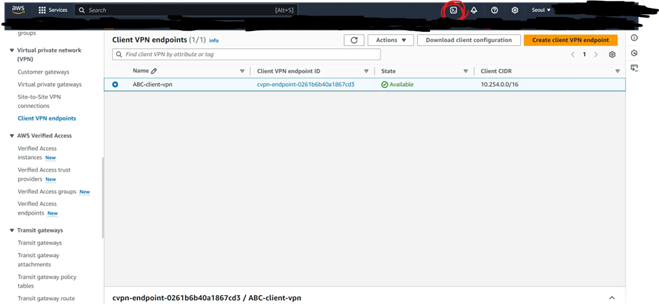
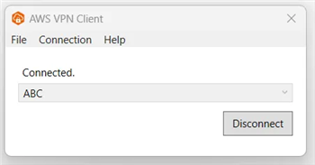

채점 유의사항
※ 다음 사항을 유의하여 채점하시오.
- 채점하는 서버가 선수의 서버가 맞는지 확인합니다.
- 채점시 명령어 입력은 아래 사진과 같이 CloudShell을 이용할 수 있습니다.

참고※ 채점기준 양식은 반드시, 양식에 맞추어 작성해야 합니다.(채점사이트 입력에 필요)
배점 요약
주요항목별 배점
| 번호 | 주요항목 | 배점 | 채점방법 | 채점시기 |
|---|---|---|---|---|
| 1 | VPN | 12.5 | 독립 | 경기 종료후 |
| 2 | Keda | 12.5 | 독립 | 경기 종료후 |
| 3 | Terraform | 12.5 | 독립 | 경기 종료후 |
| 4 | EC2 | 12.5 | 독립 | 경기 종료후 |
| 합계 | 50 |
세부항목별 배점
| 번호 | 주요항목 | 세부항목(채점방법) | 배점 |
|---|---|---|---|
| 1-1 | VPN | VPC 생성 | 1.5 |
| 1-2 | VPN | Public Subnet CIDR | 1 |
| 1-3 | VPN | Private Subnet CIDR | 1 |
| 1-4 | VPN | NAT GW | 1.5 |
| 1-5 | VPN | Client VPN CIDR | 1.5 |
| 1-6 | VPN | Client VPN HA | 1.5 |
| 1-7 | VPN | Client VPN ACL | 1.5 |
| 1-8 | VPN | Client VPN 연결 확인 | 1.5 |
| 1-9 | VPN | Client VPN 서버 접속 | 1.5 |
| 2-1 | Evnet-driven Autoscaling | EKS cluster 생성 | 1 |
| 2-2 | Evnet-driven Autoscaling | Deployment 생성 | 1.5 |
| 2-3 | Evnet-driven Autoscaling | Deployment 최소 갯수 | 1.5 |
| 2-4 | Evnet-driven Autoscaling | Deployment 환경 변수 | 1.5 |
| 2-5 | Evnet-driven Autoscaling | SQS queue 생성 | 1 |
| 2-6 | Evnet-driven Autoscaling | Keda 생성 | 1.5 |
| 2-7 | Evnet-driven Autoscaling | Scaled Object | 1.5 |
| 2-8 | Evnet-driven Autoscaling | 컨테이너 확장 | 1.5 |
| 2-9 | Evnet-driven Autoscaling | 컨테이너 축소 | 1.5 |
| 3-0 | Infrastructure as Code | 사전작업 | - |
| 3-1 | Infrastructure as Code | EC2 생성 | 1 |
| 3-2 | Infrastructure as Code | VPC 생성 | 1 |
| 3-3 | Infrastructure as Code | Public subnet 생성 | 1.5 |
| 3-4 | Infrastructure as Code | IGW 생성 | 1.5 |
| 3-5 | Infrastructure as Code | EC2 타입 | 1.5 |
| 3-6 | Infrastructure as Code | EC2 서브넷 | 1.5 |
| 3-7 | Infrastructure as Code | EBS 암호화 | 1.5 |
| 3-8 | Infrastructure as Code | IAM role | 1.5 |
| 3-9 | Infrastructure as Code | SSM 연결 | 1.5 |
| 4-1 | EC2 Automation | 테스트 인스턴스 생성 | 1 |
| 4-2 | EC2 Automation | old 스크립트 확인 및 실행 | 1.5 |
| 4-3 | EC2 Automation | 인스턴스1 삭제 | 1.5 |
| 4-4 | EC2 Automation | 인스턴스2 삭제 | 1.5 |
| 4-5 | EC2 Automation | 인스턴스3,4 미삭제 | 1.5 |
| 4-6 | EC2 Automation | all 스크립트 확인 및 실행 | 1 |
| 4-7 | EC2 Automation | 인스턴스3 삭제 | 1.5 |
| 4-8 | EC2 Automation | 인스턴스4 삭제 | 1.5 |
| 4-9 | EC2 Automation | Bastion 구동 확인 | 1.5 |
| 합계 | 50 |
채점 항목
1. VPN
1-1. VPC 생성 · 1.5점
- 웹브라우저로 선수의 AWS 계정에 로그인 후 CloudShell을 실행합니다.
- 아래 명령어를 입력 합니다.
$ export VPC_ID=$(aws ec2 describe-vpcs --filters \
Name=tag:Name,Values=[ws-vpn-vpc] --query Vpcs[].VpcId --output text)
$ aws ec2 describe-vpcs --filters Name=tag:Name,Values=[ws-vpn-vpc] \
--query Vpcs[].CidrBlock
- 출력되는 결과가 "10.99.0.0/16" 인지 확인 합니다.
1-2. Public Subnet CIDR · 1점
- 웹브라우저로 선수의 AWS 계정에 로그인 후 CloudShell을 실행합니다.
- 아래 명령어를 입력 합니다.
$ aws ec2 describe-subnets --filters \
Name=tag:Name,Values=[ws-public-subnet-a] --query Subnets[].CidrBlock
- 출력되는 결과가 "10.99.0.0/24" 인지 확인 합니다.
1-3. Private Subnet CIDR · 1점
- 웹브라우저로 선수의 AWS 계정에 로그인 후 CloudShell을 실행합니다.
- 아래 명령어를 입력 합니다.
$ aws ec2 describe-subnets --filters \
Name=tag:Name,Values=[ws-private-subnet-b] --query Subnets[].CidrBlock
- 출력되는 결과가 "10.99.11.0/24" 인지 확인 합니다.
1-4. NAT GW · 1.5점
- 웹브라우저로 선수의 AWS 계정에 로그인 후 CloudShell을 실행합니다.
- 아래 명령어를 입력 합니다.
$ export PUBLIC_SUBNET_IDS=$(aws ec2 describe-nat-gateways --filter \
Name=state,Values=[available] --query NatGateways[].SubnetId --output text)
$ aws ec2 describe-subnets --subnet-ids $PUBLIC_SUBNET_IDS --query \
Subnets[].AvailabilityZone
- 출력되는 결과에 "ap-northeast-2a", "ap-northeast-2b" 모두 포함 되어 있는지 확인합니다.
1-5. Client VPN CIDR · 1.5점
- 웹브라우저로 선수의 AWS 계정에 로그인 후 CloudShell을 실행합니다.
- 아래 명령어를 입력 합니다.
$ export CVPN_ID=$(aws ec2 describe-client-vpn-endpoints --filters \
Name=tag:Name,Values=[ws-client-vpn] --query \
ClientVpnEndpoints[].ClientVpnEndpointId --output text)
$ aws ec2 describe-client-vpn-endpoints --client-vpn-endpoint-id $CVPN_ID \
--query ClientVpnEndpoints[].ClientCidrBlock
- 출력되는 결과가 "10.254.0.0/16" 인지 확인 합니다.
1-6. Client VPN HA · 1.5점
- 웹브라우저로 선수의 AWS 계정에 로그인 후 CloudShell을 실행합니다.
- 아래 명령어를 입력 합니다.
$ aws ec2 describe-client-vpn-target-networks --client-vpn-endpoint-id \
$CVPN_ID --query ClientVpnTargetNetworks[].TargetNetworkId --output text
$ aws ec2 describe-instances --filters \ Name=tag:Name,Values=[ws-web-a,ws-web-b] \
--query Reservations[].Instances[].SubnetId --output text
- 위에서 입력한 두개의 명령어의 출력 결과가 동일한지 확인합니다.
1-7. Client VPN ACL · 1.5점
- 웹브라우저로 선수의 AWS 계정에 로그인 후 CloudShell을 실행합니다.
- 아래 명령어를 입력 합니다.
$ aws ec2 describe-client-vpn-authorization-rules --client-vpn-endpoint-id \
$CVPN_ID --query AuthorizationRules[].DestinationCidr
- 출력되는 결과가 "10.99.0.0/16" 인지 확인 합니다.
1-8. Client VPN 연결 확인 · 1.5점
- 선수의 윈도우 PC에서 AWS VPN Client를 실행하고 선수가 미리 구성해둔 프로필을 선택해 연결(Connect)를 시도 합니다.

- 아래 그림 처럼 연결에 성공해 상태가 "Conntected."로 변경 되는지 확인합니다.

1-9. Client VPN 서버 접속 · 1.5점
- 1-8 항목에서 VPN 연결을 성공해 VPC와 연결된 상태에서 진행합니다
- VPC에 생성한 웹서버의 Private IP 주소를 기록합니다.
- 브라우저에서
http://<EC2 웹서버 주소>를 입력합니다. - "Welcome to the ws portal" 이라고 보이는지 확인합니다.
2. Evnet-driven Autoscaling
2-1. EKS cluster 생성 · 1점
- Bastion의 shell에 접근합니다.
- 아래 명령어를 입력합니다.
$ aws eks describe-cluster --name order-cluster --query cluster.version
- 1.31이 출력 되는지 확인합니다.
2-2. Deployment 생성 · 1.5점
- Bastion의 shell에 접근합니다.
- 아래 명령어를 입력합니다.
$ aws eks update-kubeconfig --name order-cluster
$ kubectl get deployment --namespace order | grep order-processor
- order-processor가 출력 되는지 확인합니다.
2-3. Deployment 최소 갯수 · 1.5점
- Bastion의 shell에 접근합니다.
- 아래 명령어를 입력합니다.
$ kubectl get po -n order | grep order-processor
- 하나의 order-processor Pod만 출력 되는지 확인합니다.
2-4. Deployment 환경 변수 · 1.5점
- Bastion의 shell에 접근합니다.
- 아래 명령어를 입력합니다.
$ kubectl describe deployment -n order | grep -E "QUEUE_URL|REGION_NAME"
- QUEUE_URL과 REGION_NAME 환경 변수가 출력되는지 확인합니다.
2-5. SQS queue 생성 · 1점
- Bastion의 shell에 접근합니다.
- 아래 명령어를 입력합니다.
$ aws sqs get-queue-url --queue-name order-queue --query QueueUrl \
--output text
- SQS의 URL이 출력 되는지 확인합니다.
2-6. Keda 생성 · 1.5점
- Bastion의 shell에 접근합니다.
- 아래 명령어를 입력합니다.
$ kubectl get po -A | grep keda-operator
- keda-operator가 포함된 결과가 출력 되는지 확인합니다.
2-7. Scaled Object · 1.5점
- Bastion의 shell에 접근합니다.
- 아래 명령어를 입력합니다.
$ kubectl get scaledobjects.keda.sh -A
- 1개 이상의 결과물(ScaledObjects)가 출력 되는지 확인합니다.
2-8. 컨테이너 확장 · 1.5점
주의한대 Pod만 있어야 가능 함으로 2-3을 틀렸다면 2-8도 오답으로 간주합니다.
- Bastion의 shell에 접근합니다.
- 아래 명령어를 입력하여 부하를 만듭니다.
$ for i {1..20}; do aws sqs send-message --queue-url <<선수 Q>> \
--message-body $i; done;
- 아래 명령어를 약 5초 단위로 계속 입력해 Pod가 증설 되는지 확인합니다.
$ kubectl get po -n order | grep order-processor
- (1대 이상 증설까지 최대 5분 대기 가능)
2-9. 컨테이너 축소 · 1.5점
주의Pod 감소 테스트 임으로 2-8을 틀렸다면 2-9도 오답으로 간주합니다.
- Bastion의 shell에 접근합니다.
- 아래 명령어를 약 5초 단위로 계속 입력해 Pod가 감소 되는지 확인합니다.
$ kubectl get po -n order | grep order-processor
- (Pod 감소 까지 최대 5분 대기 가능)
3. Infrastructure as Code
3-0. 사전작업 · 배점 -
참고사전작업 단계이며 해당 명령어를 실행하여 리소스를 삭제 후 재생성 합니다.
- Default VPC에 배포된 Bastion의 /home/ec2-user/korea에 CLI로 접근합니다.
- 아래 명령어를 입력하여 기존에 생성된 리소스를 삭제하고, 테라폼 코드 기반으로 인프라를 재생성합니다.
$ cd /home/ec2-user/korea
$ terraform init && terraform destroy -auto-approve
$ terraform apply -auto-approve
3-1. EC2 생성 · 1점
- Default VPC에 배포된 Bastion의 shell에 접근합니다.
- 아래 명령어를 입력해 i- 로 시작하는 인스턴스 ID가 출력되는지 확인합니다.
$ aws ec2 describe-instances --filters Name=tag:Name,Values=[korea-instance] \
--query Reservations[].Instances[].InstanceId --output text
3-2. VPC 생성 · 1점
- Default VPC에 배포된 Bastion의 shell에 접근합니다.
- 아래 명령어를 입력해 10.0.0.0/16이 출력 되는지 확인합니다.
$ aws ec2 describe-vpcs --filters Name=tag:Name,Values=[korea-vpc] \
--query Vpcs[].CidrBlock
3-3. Public subnet 생성 · 1.5점
- Default VPC에 배포된 Bastion의 shell에 접근합니다.
- 아래 명령어를 입력해 ap-northeast-2a가 출력 되는지 확인합니다.
$ aws ec2 describe-subnets --filters Name=tag:Name,Values=[korea-public-subnet-a] \
--query Subnets[].AvailabilityZone
3-4. IGW 생성 · 1.5점
- Default VPC에 배포된 Bastion의 shell에 접근합니다.
- 아래 명령어를 입력해 igw- 로 시작하는 IGW ID가 출력되는지 확인합니다.
$ export VPC_ID=$(aws ec2 describe-vpcs --filters \
Name=tag:Name,Values=[korea-vpc] --query Vpcs[].VpcId --output text)
$ aws ec2 describe-internet-gateways --filters \
Name=attachment.vpc-id,Values=[$VPC_ID] --query \
InternetGateways[].InternetGatewayId
3-5. EC2 타입 · 1.5점
- Default VPC에 배포된 Bastion의 shell에 접근합니다.
- 아래 명령어를 입력해 t3.micro가 출력 되는지 확인합니다.
$ aws ec2 describe-instances --filters Name=tag:Name,Values=[korea-instance] \
--query Reservations[].Instances[].InstanceType
3-6. EC2 서브넷 · 1.5점
- Default VPC에 배포된 Bastion의 shell에 접근합니다.
- 아래 명령어를 입력해 skills-public-subnet-a가 출력 되는지 확인합니다.
$ export SUBNET_ID=$(aws ec2 describe-instances --filters Name=tag:Name,Values=[korea-instance] \
--query Reservations[].Instances[].SubnetId)
$ aws ec2 describe-subnets --subnet-ids $SUBNET_ID --query Subnets[].Tags[?Key==\`Name\`].Value
3-7. EBS 암호화 · 1.5점
- Default VPC에 배포된 Bastion의 shell에 접근합니다.
- 아래 명령어를 입력해 true 가 출력 되는지 확인합니다.
$ export VOLUME_ID=$(aws ec2 describe-instances --filters \
Name=tag:Name,Values=[korea-instance] --query \
Reservations[].Instances[].BlockDeviceMappings[].Ebs.VolumeId --output text)
$ aws ec2 describe-volumes --volume-ids $VOLUME_ID --query Volumes[].Encrypted
3-8. IAM role · 1.5점
- Default VPC에 배포된 Bastion의 shell에 접근합니다.
- 아래 명령어를 입력해 IAM role의 ARN이 출력 되는지 확인합니다.
$ aws ec2 describe-instances --filters Name=tag:Name,Values=[korea-instance] \
--query Reservations[].Instances[].IamInstanceProfile | grep -i Arn
3-9. SSM 연결 · 1.5점
- Default VPC에 배포된 Bastion의 shell에 접근합니다.
- 아래 명령어를 입력해 Online 이 출력 되는지 확인합니다.
$ export INSTANCE_ID=$(aws ec2 describe-instances --filters \
Name=tag:Name,Values=[korea-instance] --query \
Reservations[].Instances[].InstanceId --output text)
$ aws ssm describe-instance-information --filters \
Key=InstanceIds,Values=[$INSTANCE_ID] --query InstanceInformationList[].PingStatus
4. EC2 Automation
4-1. 테스트 인스턴스 생성 · 1점
- Tokyo에 배포된 Bastion의 shell에 접근합니다.
- 아래 명령어를 입력해 에러없이 실행 되는지 확인합니다.
$ aws ec2 run-instances --image-id "ami-03f584e50b2d32776" --instance-type "t3.micro" \
--tag-specifications \
'{"ResourceType":"instance","Tags":[{"Key":"Name","Value":"instance-1-2025x2gj"}, \
{"Key":"Project","Value":"skills2022"}]}' --count "1" --no-cli-pager > /dev/null
$ aws ec2 run-instances --image-id "ami-03f584e50b2d32776" --instance-type "t3.micro" \
--tag-specifications \
'{"ResourceType":"instance","Tags":[{"Key":"Name","Value":"instance-2-2025x2gj"}, \
{"Key":"Project","Value":"skills2022"}]}' --count "1" --no-cli-pager > /dev/null
$ aws ec2 run-instances --image-id "ami-03f584e50b2d32776" --instance-type "t3.micro" \
--tag-specifications \
'{"ResourceType":"instance","Tags":[{"Key":"Name","Value":"instance-3-2025x2gj"}, \
{"Key":"Project","Value":"skills2023"}]}' --count "1" --no-cli-pager > /dev/null
$ aws ec2 run-instances --image-id "ami-03f584e50b2d32776" --instance-type "t3.micro" \
--tag-specifications \
'{"ResourceType":"instance","Tags":[{"Key":"Name","Value":"instance-4-2025x2gj"}, \
{"Key":"Project","Value":"skills2024"}]}' --count "1" --no-cli-pager > /dev/null
4-2. old 스크립트 확인 및 실행 · 1.5점
- Tokyo에 배포된 Bastion의 shell에 접근합니다.
- 아래 명령어로 delete_old_instance.sh가 있는지 확인합니다. (존재 시 득점)
$ cd /home/ec2-user/ec2-automation/
$ ls -l | grep delete_old_instance
- 존재 한다면 아래 명령어로 delete_old_instance를 실행합니다.
$ chmod +x delete_old_instance.sh
$ ./delete_old_instance.sh
- (약 30초 대기 후 4-3 채점을 시작 합니다.)
4-3. 인스턴스1 삭제 · 1.5점
- Default VPC에 배포된 Bastion의 shell에 접근합니다.
- 아래 명령어를 입력해 instance-1의 상태가 "Shutting-down" 이나 "Terminated"로 출력 되는지 확인합니다.
$ aws ec2 describe-instances --filters Name=tag:Name,Values=[instance-1-2025x2gj] \
--query Reservations[].Instances[].State
4-4. 인스턴스2 삭제 · 1.5점
- Default VPC에 배포된 Bastion의 shell에 접근합니다.
- 아래 명령어를 입력해 instance-2의 상태가 "Shutting-down" 이나 "Terminated"로 출력 되는지 확인합니다.
$ aws ec2 describe-instances --filters Name=tag:Name,Values=[instance-2-2025x2gj] \
--query Reservations[].Instances[].State
4-5. 인스턴스3,4 미삭제 · 1.5점
- Default VPC에 배포된 Bastion의 shell에 접근합니다.
- 아래 명령어를 입력해 instance-3과 4의 상태가 "Running" 인지 확인합니다.
$ aws ec2 describe-instances --filters \
Name=tag:Name,Values=[instance-3-2025x2gj] --query Reservations[].Instances[].State
$ aws ec2 describe-instances --filters \
Name=tag:Name,Values=[instance-4-2025x2gj] --query Reservations[].Instances[].State
4-6. all 스크립트 확인 및 실행 · 1점
- Default VPC에 배포된 Bastion의 shell에 접근합니다.
- 아래 명령어로 delete_all_instance.sh가 있는지 확인합니다. (존재 시 득점)
$ cd /home/ec2-user/ec2-automation/
$ ls -l | grep delete_all_instance
- 존재 한다면 아래 명령어로 delete_all_instance를 실행합니다.
$ chmod +x delete_all_instance.sh
$ ./delete_all_instance.sh
- (약 30초 대기 후 4-7 채점을 시작 합니다.)
4-7. 인스턴스3 삭제 · 1.5점
- Default VPC에 배포된 Bastion의 shell에 접근합니다.
- 아래 명령어를 입력해 instance-3의 상태가 "Shutting-down" 이나 "Terminated"로 출력 되는지 확인합니다.
$ aws ec2 describe-instances --filters Name=tag:Name,Values=[instance-3-2025x2gj] \
--query Reservations[].Instances[].State
4-8. 인스턴스4 삭제 · 1.5점
- Default VPC에 배포된 Bastion의 shell에 접근합니다.
- 아래 명령어를 입력해 instance-4의 상태가 "Shutting-down" 이나 "Terminated"로 출력 되는지 확인합니다.
$ aws ec2 describe-instances --filters Name=tag:Name,Values=[instance-4-2025x2gj] \
--query Reservations[].Instances[].State
4-9. Bastion 구동 확인 · 1.5점
- Default VPC에 배포된 Bastion의 shell에 접근합니다.
- 아래 명령어를 입력해 bastion 서버의 상태가 "Running" 인지 확인합니다.
$ aws ec2 describe-instances --filters Name=tag:Name,Values=[automation-bastion] \
--query Reservations[].Instances[].State